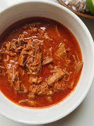

Birria

Description:
The word Birria means “exquisite savory dish, full of culture and tradition.” In literal terms it refers to something of no use or value, and that has to do with the original meat base of Birria being goat, a meat that became a staple in this Mexican recipe not out of love, but rather necessity.
Ingredients:
- 5 dried Anaheim chile peppers, stemmed and seeded
- 5 guajillo chile peppers, stemmed and seeded
- Water to cover
- 1/4 onion
- 1 tablespoon mixed spices, or more to taste
- 1 tablespoon salt, or to taste
- 3 pounds cubed beef stew meat
- 6 bay leaves
Steps:
- Prepare the dried chiles. Seed, toast, and soak the chiles. It sounds like a whole thing, but it only takes about 20 minutes. Detailed how-to is in the recipe at the bottom of the page.
- Brown the beef. Cook it in batches if need be, and make sure you get a nice browning on all sides. Set it aside, or just go ahead and put it right into your Dutch oven.
- Make the birria sauce / broth base! There should be some fat and oil left in the pan from searing the beef—that’s a good thing! Use it to cook the onion wedges a bit, then add garlic, cinnamon, oregano, cumin, bay leaves, and ginger. After a minute or two, pour in the beef stock and vinegar.
- Time to blend! Pour the onion, broth and spice mixture into a blender, and add the seeded, soaked and drained chiles. Blend! Voila! You’ve made the world's best braising liquid.
- Pour your chile sauce over all of the beef into a Dutch oven, and cook for about 3 to 3.5 hours, until the meat is falling apart.